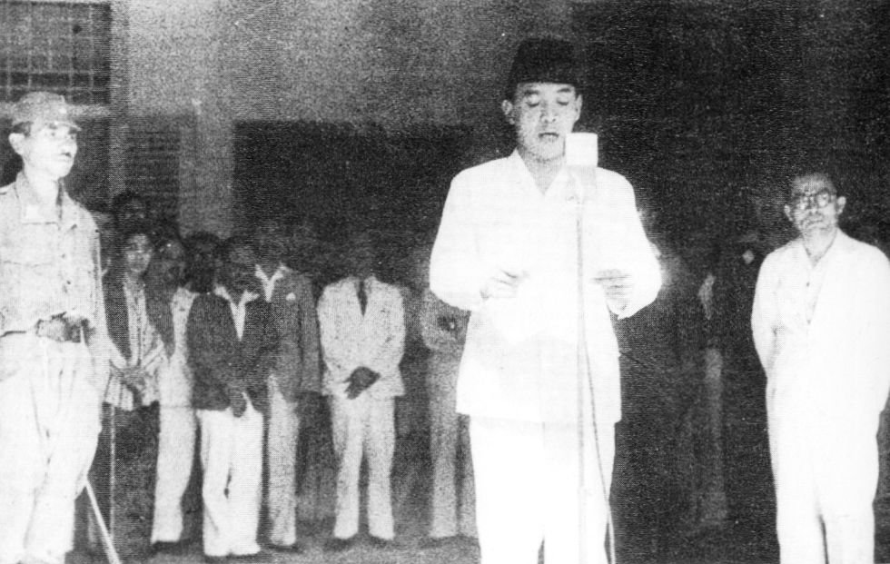
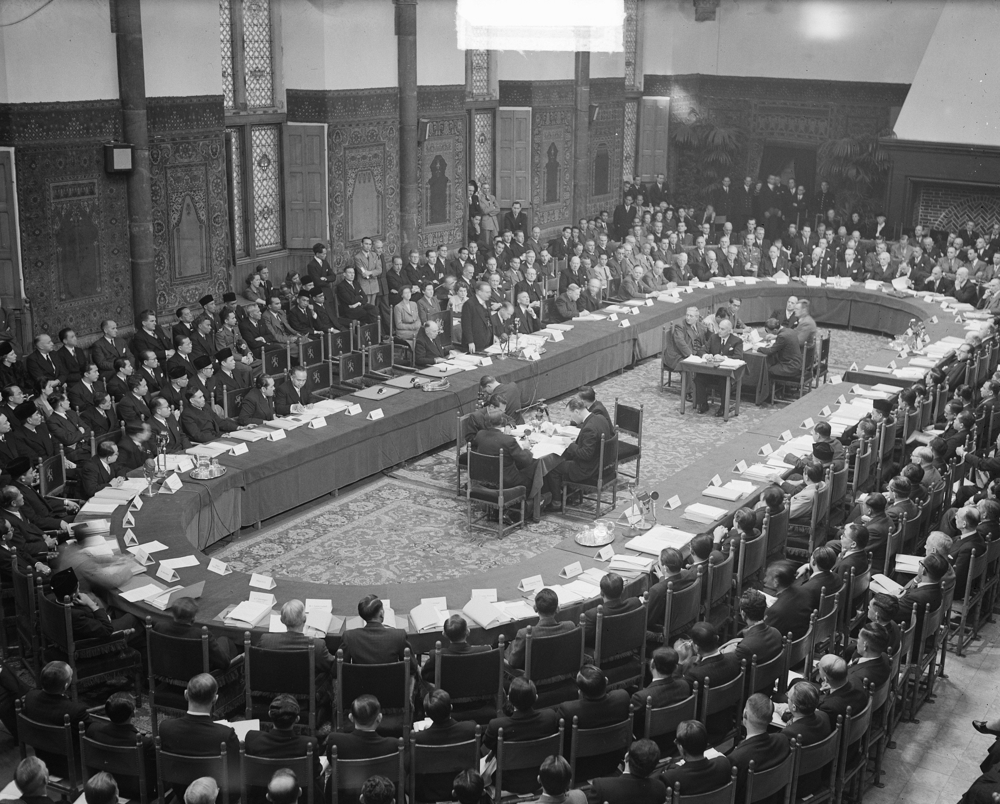

Pembacaan Naskah Proklamasi oleh Soekarno

Konferensi Meja Bundar (KMB) di en Haag, Belanda pada tanggal 23 Agustus hingga 2 November 1949
Gerakan Non Blok (GNB), Konferensi Asia Afrika di Gedung Merdeka, Bandung, Indonesia pada tahun 1955
Kerusuhan Mei 1998
Reformasi di Gedung Parlemen pada tahun 1998